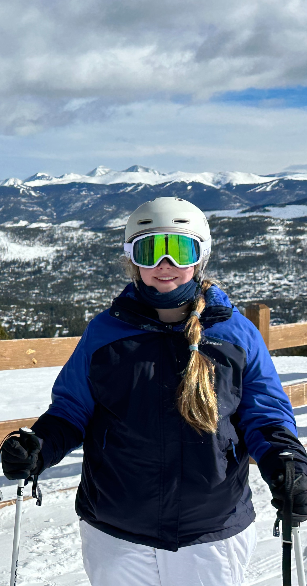
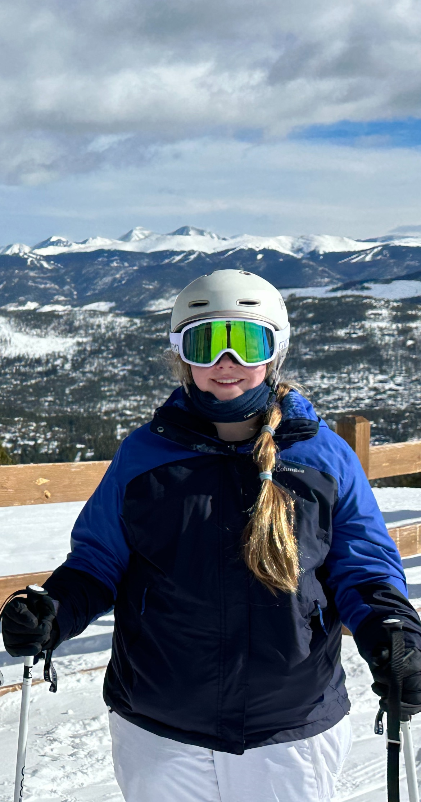

Bio
Hello, my name is Mia Hunter. I live in Chicago with my parents. Currently, I am an 8th grader at GEMS World Academy Chicago and this year I had the opportunity of taking the selective enrollment test for high school. This resulted in my enrollment next year at Jones College Prep. During the school year, I am a good student and highly engage with my studies in and out of the classroom. My favorite classes are visual art math and science. At school we take foreign languages I study Spanish in addition to German on my own. The hardest aspect of school is the social side. A way that has prevented me from having a large friend group is instead of spending time keeping up with trends I focus my attention on doing more of my class work to the highest standard. Because of this, I love school and learning new things in general. In the future, I would hope to become an engineer or an architect because these professions perfectly combine my interests in math, science, and art.
 

Hobbies
Outside of school, I participate in a variety of activities. Most of these involve the Arts some examples of that are sewing, ukulele, and watercolor painting. In addition to those, I enjoy the thirll of skiing and I have been sailing for close to a decade and enjoy trying out different types of sailboats and learning the mechanics of why they move. Furthermore, I have an appreciation for gardening and growing plants to tell a story. the way I do this is by picking plants that reflect a theme as well as using characters like fairy gardens to help supplement the design. On top of this, I am interested in learning how things work and how systems operate. This mainly takes the form of learning how things are made and why we use them. Some recent examples include, why humanity does not use more reusable sources of energy. This has led me to appreciate physics because it places formulas and math to govern the world around us.
Creations
As I had mentioned before I love to create things with a wide range of tools and materials. Some recently acquired skills to creat things is the ability to code this website is a test to my skills at HTML and CSS but before this I was coding in python. In contrast to theas digital tools I work with my hands to create a range of work that is apeling to look at thru its use of meny details to attract the eye to different locations. I typically Prefer to work in three-dimensional space but I have found much success when working with watercolors, acrylics and graphite. Above is a resent example of a three dimensional project. It is a sail boat that is made out of card boad.